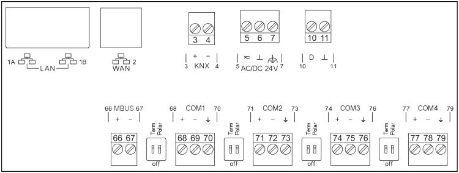

PXC7.E400L

Terminal | Symbol | Description |
1A、1B |
| LAN：2 个 RJ45 接口，用于带交换机的以太网 |
2 |
| WAN: 1 x RJ45 interface |
3, 4 | KNX | KNX PL-Link (for future use) |
5, 6 | 〜，⏊ | 工作电压 AC 24 V |
7 | 功能接地，必须在安装侧与建筑物接地系统 (PE) 连接。 | |
10, 11 | D、⏊ | 数字输入（供将来使用） |
学期 | 开、关 | 总线终端开关 |
66, 67 | MBUS | M-bus 接口（供将来使用） |
68, 69, 70 | COM1 | Interface EIA-485 (Modbus RTU and MS/TP) |
71, 72, 73 | COM2 | |
74, 75, 76 | COM3 | |
77, 78, 79 | COM4 | |
设备右侧 | 用于连接TXM输入/output模块的接口 | |